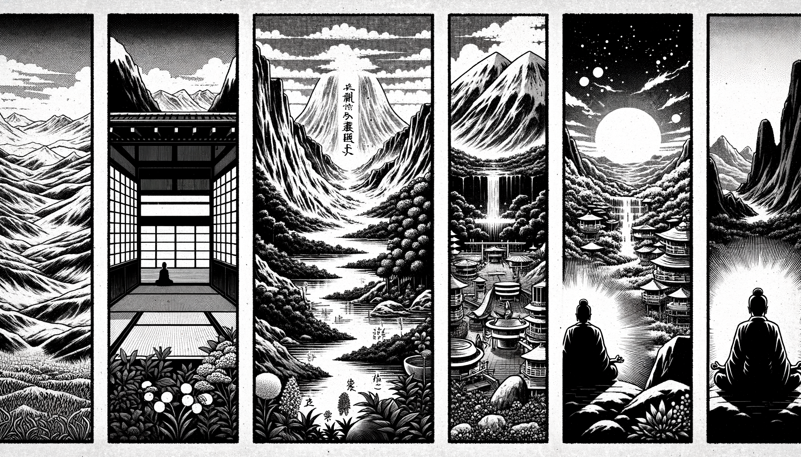

七十五巻 巻一覧
正法眼藏第49 陀羅尼
本紹介ページの導入・語彙・深掘り・クイズは tools/regen_volume_intro_from_corpus.py が OpenAI API で生成したものです（入力は当巻の原文からの短い抜粋のみ）。内容はモデル出力のため、重要箇所は必ず原文・教本と照合してください。
出典: https://shomonji.or.jp/zazen/doc/genzou.html
原文・現代語訳の全文は 全文ページを参照してください。
この巻の紹介（導入）
參學眼あきらかなるは、正法眼あきらかなり。正法眼あきらかなるゆゑに、參學眼あきらかなることをうるなり。
この關棙を正傳すること、必然として大善知識に奉覲するちからなり。これ大因緣なり、これ大陀羅尼なり。
語彙の足場
- 參學：仏教において学びを深めること。特に、師から教えを受けることを指す。
- 正法眼：仏教の真理や教えを理解するための視点。正しい理解を得ることを意味する。
- 大善知識：深い智慧を持つ師匠や指導者のこと。仏教において重要な存在。
- 陀羅尼：仏教の呪文や真言。特定の意味や効果を持つ言葉の集まり。
- 奉覲：尊敬をもって師や仏に仕えること。礼をもって接することを意味する。
- 三昧：深い集中状態。瞑想や修行において心を一つの対象に集中させること。
原文（要点の抜粋）
当巻の冒頭付近からの短い抜粋です。長い引用は載せていません。 全文は全文ページを参照してください。出典はリポジトリ内 doc/正法眼蔵.txt です。原文の参照元: https://shomonji.or.jp/zazen/doc/genzou.html
參學眼あきらかなるは、正法眼あきらかなり。正法眼あきらかなるゆゑに、參學眼あきらかなることをうるなり。この關棙を正傳すること、必然として大善知識に奉覲するちからなり。これ大因緣なり、これ大陀羅尼なり。いはゆる大善知識は佛祖なり。かならず巾瓶に勤恪すべし。
しかあればすなはち、擎茶來、點茶來、心要現成せり、神通現成せり。盥水來、瀉水來、不動著境なり、下面了知なり。佛祖の心要を參學するのみにあらず、心要裏の一兩位の佛祖に相逢するなり。佛祖の神通を受用するのみにあらず、神通裏の七八員の佛祖をえたるなり。これによりて、あらゆる佛祖の神通は、この一束に究盡せり。あらゆる佛祖の心要は、この一拈に究盡せり。このゆゑに、佛祖を奉覲するに、天華天香をもてする、不是にあらざれども、三昧陀羅尼を拈じて奉覲供養する、これ佛祖の兒孫なり。
いはゆる大陀羅尼は、人事これなり。人事は大陀羅尼なるがゆゑに、人事の現成に相逢するなり。人事の言は、震旦の言音を依模して、世諦に流通せることひさしといふとも、梵天より相傳せず、西天より相傳せず、佛祖より正傳せり。これ聲色の境界にあらざるなり、威音王佛の前後を論ずることなかれ。
その人事は、燒香禮拜なり。あるいは出家の本師、あるいは傳法の本師あり。傳法の本師すなはち出家の本師なるもあり。これらの本師にかならず依止奉覲する、これ咨參の陀羅尼なり。いはゆる時時をすごさず參侍すべし。
安居のはじめをはり、冬年および月旦月半、さだめて燒香禮拜す。その法は、あるいは粥前、あるいは粥罷をその時節とせり。威儀を具して師の堂に參ず。威儀を具すといふは、袈裟を著し、坐具をもち、鞋襪を整理して、一片の沈箋香等を帶して參ずるなり。
師前にいたりて問訊す。侍僧ちなみに香爐を裝し燭をたて、師もしさきより椅子に坐せば、すなはち燒香すべし。師もし帳裏にあらば、すなはち燒香すべし。師もしは臥し、もしは食し、かくのごときの時節ならば、すなはち燒香すべし。師もし地にたちてあらば、請和尚坐と問訊すべし。請和尚穩便とも請ず。あまた請坐の辭あり。和尚を椅子に請じ坐せしめてのちに問訊す。曲躬如法なるべし。問訊しをはりて、香臺の前面にあゆみよりて、帶せる一片香を香爐にたつ。香をたつるには、香あるいは衣襟にさしはさめることあり。あるいは懷中にもてるもあり。あるいは袖裏に帶せることもあり。おのおの人のこころにあり。問訊ののち、香を拈出して、もしかみにつつみたらば、右手へむかひて肩を轉じて、つつめる紙をさげて、兩手に香を擎て香爐にたつるなり。すぐにたつべし、かたぶかしむることなかれ。香をたてをはりて、叉手して、右へめぐりてあゆみて、正面にいたりて、和尚にむかひ曲躬如法問訊しをはりて、展坐具禮拜するなり。拜は九拜、あるいは十二拜するなり。拜しをはりて、收坐具して問訊す。あるいは一展坐具禮三拜して、寒暄をのぶることもあり。いまの九拜は寒暄をのべず、ただ一展三拜を三度あるべきなり。その儀、はるかに七佛よりつたはれるなり。宗旨正傳しきたれり。このゆゑにこの儀をもちゐる。かくのごとくの禮拜、そのときをむかふるごとに癈することなし。そのほか、法益をかうぶるたびごとには禮拜す。因緣を請益せんとするにも禮拜するなり。二祖そのかみ見處を初祖にたてまつりしとき、禮三拜するがごときこれなり。正法眼藏の消息を開演するに三拜す。
しるべし、禮拜は正法眼藏なり。正法眼藏は大陀羅尼なり。請益のときの拜は、近來おほく頓一拜をもちゐる。古儀は三拜なり。法益の謝拜、かならずしも九拜十二拜にあらず。あるいは三拜、あるいは觸禮一拜なり。あるいは六拜あり。ともにこれ稽首拜なり。西天にはこれを最上禮拜となづく。あるいは六拜あり、頭をもて地をたたく。いはく、額をもて地にあててうつなり、血のいづるまでもす、これにも展坐具せるなり。一拜三拜六拜、ともに額をもて地をたたくなり。あるいはこれを頓首拜となづく。世俗にもこの拜あるなり。世俗には九品の拜あり。法益のとき、また不住拜あり。いはゆる禮拜してやまざるなり。百千拜までもいたるべし。ともにこれら佛祖の會にもちゐきたれる拜なり。
おほよそこれらの拜、ただ和尚の指揮をまぼりて、その拜を如法にすべし。おほよそ禮拜の住世せるとき、佛法住世す。禮拜もしかくれぬれば、佛法滅するなり。
傳法の本師を禮拜することは、時節をえらばず、處所を論ぜず拜するなり。あるいは臥時食時にも拜す、行大小時にも拜す。あるいは牆壁をへだて、あるいは山川をへだてても遥望禮拜するなり。あるいは劫波をへだてて禮拜す、あるいは生死去來をへだてて禮拜す、あるいは菩提涅槃をへだてて禮拜す。
弟子小師、しかのごとく種種の拜をいたすといへども、本師和尚は答拜せず。ただ合掌するのみなり。おのづから奇拜をもちゐることあれども、おぼろげの儀にはもちゐず。かくの如くの禮拜のとき、かならず北面禮拜するなり。本師和尚は南面して端坐せり。弟子は本師和尚の面前に立地して、おもてを北にして、本師にむかひて本師を拜するなり。これ本儀なり。みづから歸依の正信おこれば、かならず北面の禮拜、そのはじめにおこなはると正傳せり。
このゆゑに、世尊の在日に、歸佛の人衆天衆龍衆、ともに北面にして世尊を恭敬禮拜したてまつる。最初には、
阿若憍陳如［亦名拘隣］阿濕卑［亦名阿陛］摩訶摩南［亦名摩訶拘利］波提［亦名跋提］婆敷［亦名十力迦葉］
図解（4コマ・AI生成）
教義の根拠は原文・出典に従い、漫画は比喩の補助に留めてください。

深掘り（読解の手掛かり）
- 正法眼は、仏教の真理を理解するための重要な視点である。
- 大善知識は、仏教において特に尊敬される師匠を指し、教えを受けることが重要である。
- 陀羅尼は、仏教の教えを伝えるための呪文であり、特定の効果を持つとされる。
確認（形成評価）
各設問の下の「採点」で正誤を表示します（ブラウザ内のみ。ログは送りません）。